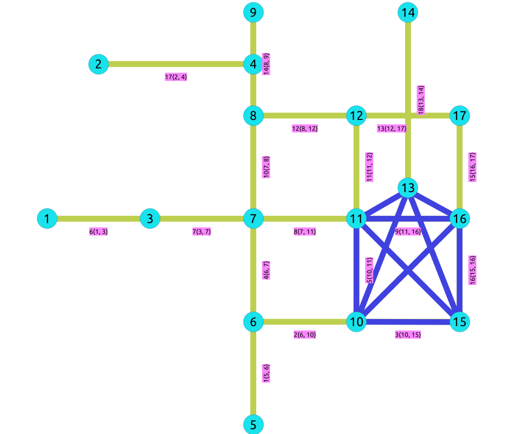

pgr_isPlanar - Experimental¶
pgr_isPlanar — Devuelve un valor boolean dependiendo de la planaridad del grafo.

Adentro: Boost Graph¶
Advertencia
Posible bloqueo del servidor
Estas funciones pueden crear un bloqueo del servidor
Advertencia
Funciones experimentales
No son oficialmente de la versión actual.
Es probable que oficialmente no formen parte de la siguiente versión:
Las funciones no podrían hacer uso de ANY-INTEGER ni ANY-NUMERICAL
El nombre puede cambiar.
La firma (declaración de funciones) podría cambiar.
La funcionalidad puede cambiar.
Las pruebas de pgTap pueden estar ausentes.
Posiblemente necesite codificación c/c++.
Puede haber carencia de documentación.
Hay documentación que, en dado caso, podría ser necesario reescribir.
Ejemplos de documentación que puede ser necesario generar automáticamente.
Puede ser necesaria más retroalimentación por parte de la comunidad.
Puede depender de una función propuesta de pgRouting.
Podría depender de una función obsoleta de pgRouting
Disponibilidad
Versión 3.2.0
Nueva función experimental
Descripción¶
Un grafo es planar si se puede dibujar en un espacio bidimensional sin que se crucen dos de sus aristas. Este dibujo de un grafo planaro es llamado dibujo de plano. Cada grafo planar también admite un dibujo de línea recta, que es un dibujo de plano donde cada arista está representada por un segmento de línea. Cuando un grafo tiene \(K_5\) or \(K_{3,3}\) como subgrafo, entonces el grafo no es planar.
- Las principales características son:
Esta implementación utiliza la Prueba de Planaridad de Boyer-Myrvold.
Devolverá un valor boolean dependiendo de la planaridad del grrafo.
Aplicable solo para grafos no dirigidos.
El algoritmo no considera los costos transversales en los cálculos.
Tiempo de ejecución: \(O(|V|)\)
Firmas¶
Resumen
pgr_isPlanar(Edges SQL) -- Experimental on v3.2
RETURNS BOOLEAN
SELECT * FROM pgr_isPlanar(
'SELECT id, source, target, cost, reverse_cost
FROM edge_table'
);
pgr_isplanar
--------------
t
(1 row)
Parámetros¶
Parámetro |
Tipo |
Valores predeterminados |
Descripción |
|---|---|---|---|
Edges SQL |
|
Consulta SQL como se describe a continuación. |
Consulta interna¶
- Edges SQL
Una consulta SQL, que debe regresar un conjunto de filas con las siguientes columnas:
Columna |
Tipo |
Valores predeterminados |
Descripción |
|---|---|---|---|
id |
|
Identificador de la arista. |
|
origen |
|
Identificador del primer punto final en el vértice de la arista. |
|
objetivo |
|
Identificador del segundo punto final en el vértice de la arista. |
|
cost |
|
|
|
reverse_cost |
|
-1 |
|
Donde:
- ANY-INTEGER
SMALLINT, INTEGER, BIGINT
- ANY-NUMERICAL
SMALLINT, INTEGER, BIGINT, REAL, FLOAT
Columnas de Resultados¶
Devuelve un valor boolean (pgr_isplanar)
Columna |
Tipo |
Descripción |
|---|---|---|
pgr_isplanar |
|
|
Ejemplo Adicional:¶
Las siguientes aristas harán de el subgrafo con los vértices {3, 4, 6, 9, 16} un grafo \(K_5\).
INSERT INTO edge_table (source, target, cost, reverse_cost) VALUES
(3, 9, 1, 1), (3, 16, 1, 1),
(4, 6, 1, 1), (4, 16, 1, 1),
(6, 16, 1, 1),
(9, 16, 1, 1);
INSERT 0 6
El nuevo grafo no es planar porque tiene un subgráfico \(K_5\). Las aristas en azul representan el subgrafo :math:”K_5”.
{kind=link}
SELECT * FROM pgr_isPlanar(
'SELECT id, source, target, cost, reverse_cost
FROM edge_table'
);
pgr_isplanar
--------------
f
(1 row)
Ver también¶
Las consultas utilizan la red Datos Muestra .
Índices y tablas